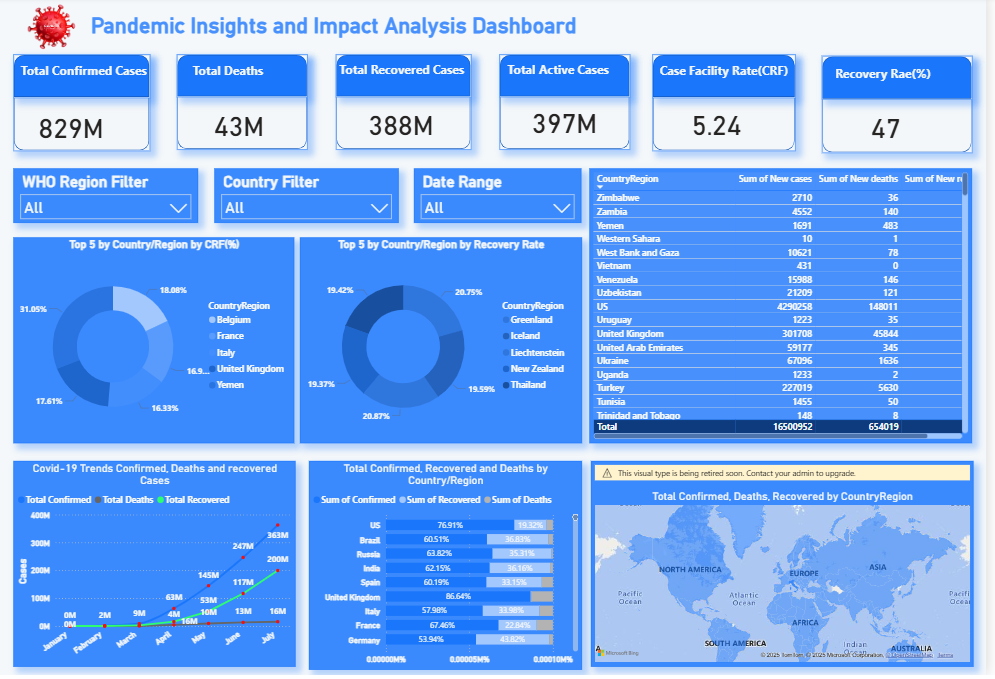
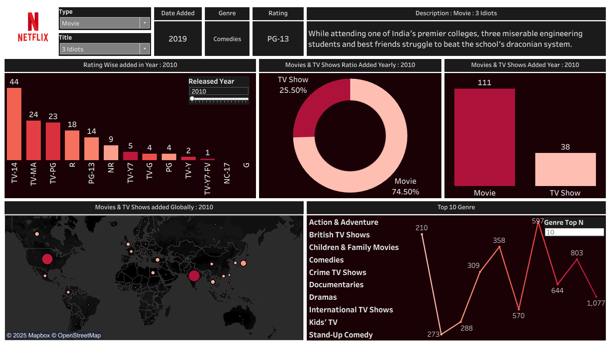

IT Operations Professional & Future Data Sciene & AI
I am an experienced professional with a proven track record in Change Management, Incident Management, and Server Monitoring. After over a decade of ensuring system stability and operational excellence, I am channeling my analytical skills into the world of Data Science and Artificial Intelligence.
I am passionate about applying machine learning and data analysis to solve real-world problems and am currently pursuing certifications from Microsoft and IBM in AI/Data Science.
12+ Years Experience
Microsoft Certified
Redhat Certified
Masters in CS
My Education
Master of Computer Science
Sikkim Manipal University
Bachelor of Computer Science
Bengaluru University
My Experience
Sep 2025 - Nov 2025
System Administrator
Indelox Services Pvt Ltd
Managed Windows servers and user administration via Active Directory.
Handled backup management and Office 365 troubleshooting.
Applied automation through scripting to enhance task efficiency.
Provided global support to clients across UK, USA, Germany.
Apr 2017 - Jun 2025
Lead - Tech Solutions & Operations
Agile Tech
Led B2B tech solutions and client interactions.
Administered Apache Web Servers, DNS, NFS, and VM-based infrastructure.
Wrote shell scripts for automation and backup processes.
Participated in data center migration projects.
Jan 2010 - Mar 2017
System Analyst / Operations Support
Syniverse Technologies
Oversaw change management and operational support.
Created and executed CRQ/MOP for change management.
Received "Above and Beyond", "Excellence", and "Spark" awards.
Generated weekly reports on monitoring servers and prevention tasks.
Jul 2007 - Jan 2010
System Engineer
Verisign Technologies
Monitored and provided support to Application servers, Apache, DNS, NFS.
Acknowledged alarms triggered in monitoring tools and raised tickets.
Technical Skills
Data Science & AI
PythonPandasNumPyMatplotlibSeaborn
Tools & Analytics
SQLPower BIExcelJupyterVS Code
System Admin & Ops
Linux (RedHat)Windows ServerNagiosSalesforceRemedy
This Power BI project provides a detailed analysis of heart disease data.
The dashboard highlights key trends, risk factors, and patterns to help identify insights for healthcare analytics and decision-making.View

Covid-19
This Power BI dashboard visualizes global COVID-19 data across key metrics — Confirmed Cases, Deaths, and Recoveries — with interactive maps, KPI cards, and trend visuals. Designed for executive audiences, it enables rapid insights into country-level impact, recovery trends, and fatality rates.View

Netflix
This Tableau dashboard provides interactive visualizations for analyzing content, showing distribution by genre, country, and release year, tracking trends (like content growth), analyzing ratings (maturity levels), comparing movies vs. TV shows, and often includes word clouds from descriptions and filters for genre/year to offer insights into content strategy and consumption patterns
View